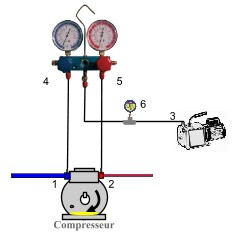
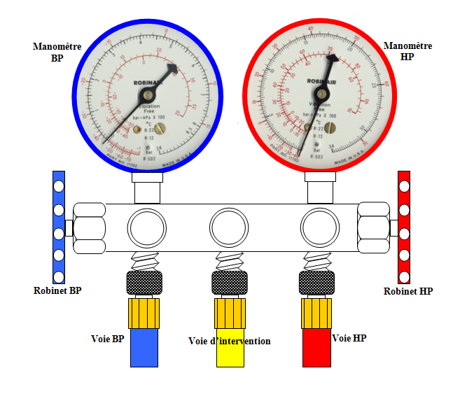
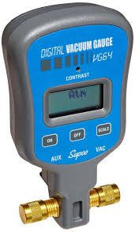
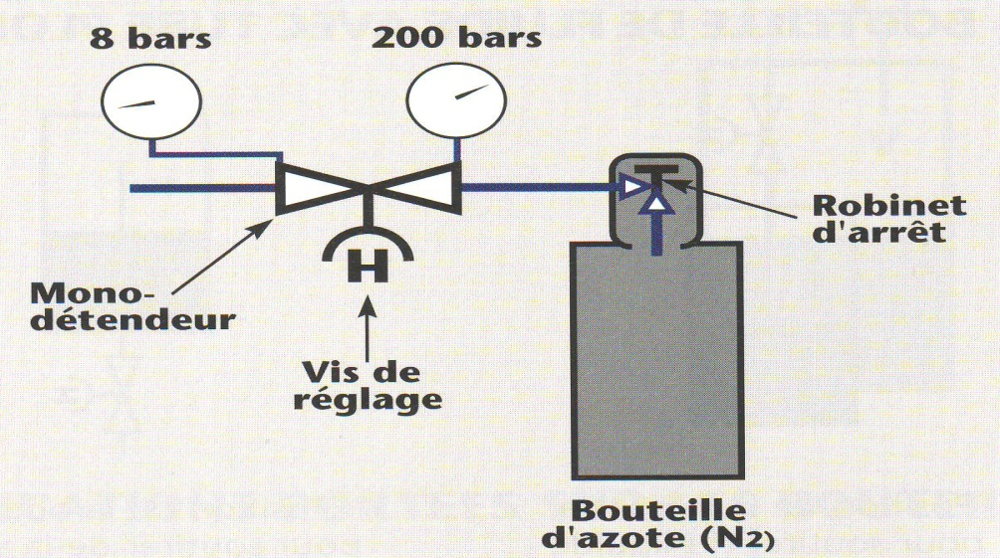

Thème / DomaineSimulation de charge au poids et lecture de relevés
Module atelier S8-F2 · 4 h — PASSAGE UNIQUETirage au vide et charge enchaînés
SéquenceS8 · semaine 28
Nom, prénom (binôme)________________
Nom, prénom (binôme)________________
Date________________
Positionnement01234
Mise en situation professionnelle
Ordre d'intervention n° OI-S8-2 : le montage cuivre de l'arrière-boutique, déjà éprouvé étanche
(S6), puis tiré au vide pour en extraire l'air et l'humidité (S7-F2), doit maintenant être mis en
service. Vous avez appris séparément le tirage au vide (S7-F2) et la simulation de charge au poids à
l'azote (S8-F1). Aujourd'hui, vous allez enchaîner les deux gestes vous-même, sans que le professeur ne
vous rappelle l'ordre des étapes, puis remplir la feuille de relevés de mise en service (version
pédagogique, en annexe) à partir de vos propres mesures. C'est une répétition générale de la mise en
service que vous ferez réellement, avec un fluide frigorigène, l'an prochain.

Rappel (S7-F2) : c'est ce montage que vous allez reprendre au jalon 1. D'après :
ressource tirage au vide.docx.
Pourquoi une seule séance, cette fois — En S8-F1, vous avez vécu la
simulation de charge deux fois (semaines 26 et 27). Aujourd'hui, ce module ne se vit qu'une seule
fois. Ce n'est pas un module au rabais : vous ne découvrez aucun geste nouveau. Il s'agit de la
synthèse — enchaîner, SEUL(E), deux gestes que vous maîtrisez déjà séparément (le vide en S7-F2, la
charge simulée en S8-F1). C'est l'enchaînement en autonomie, et non un second passage, qui fait progresser la
compétence C4.5 vers son niveau visé de Maîtrise.
Tâches
T13 Tirer au vide, charger et contrôler l'installation sous tension (SIMULÉ : charge à l'azote) T15 Renseigner les documents de mise en service
Savoirs
S5.5 Réseaux fluidiques et mécanique des fluides augmenté
Savoir-être
Rigueur de l'enchaînement (aucune étape sautée) · honnêteté du relevé (feuille exploitable par un tiers) · autonomie · sécurité (azote, jamais de fluide réel)
Compétences (≤ 4)
ConfortementC4.1 Tirer au vide le circuit frigorifique sur T13 · S5.5 ConfortementC4.5 Mesurer, comparer des grandeurs niveau visé Maîtrise — aucun statut Évaluation aujourd'hui
Objectifs — je serai capable de…
reprendre en autonomie le tirage au vide du montage : branchement, relevés à intervalles réguliers, constat du palier, casse du vide à l'azote ;
enchaîner, sans aide sur l'ordre des étapes, la simulation de charge au poids à l'azote (tare de la balance, raccordement, pesée, complément jusqu'à la masse cible) ;
renseigner intégralement la feuille de relevés de mise en service (version pédagogique), à partir de mes propres mesures ;
respecter l'ordre d'une mise en service réelle (vide d'abord, charge ensuite, jamais l'inverse), et expliquer pourquoi ;
distinguer ce que j'ai fait aujourd'hui (simulé, azote) de ce que je ferai réellement en 2e année (fluide frigorigène, attestation d'aptitude).
Prérequis — je sais déjà…
Ce module n'introduit aucun geste nouveau : il vous demande d'enchaîner, sans
aide, deux gestes que vous avez déjà appris séparément :
tirer au vide un circuit, tracer et interpréter une courbe temps/pression, casser le vide à l'azote (S7-F2, C4.1 Découverte → Confortement) ;
simuler une charge au poids à l'azote : tare de la balance, raccordement, pesée du transfert, complément (S8-F1, C4.2 Découverte) ;
lire des relevés réels et repérer une valeur aberrante (S7-T1) ;
manipuler le manodétendeur d'azote par paliers, sous supervision (S5-F2, S6-F1, S7-F2) ;
É3 est passée : votre plan de progrès personnel s'applique aussi ici, en particulier sur la rigueur du relevé et l'honnêteté de la feuille de mise en service.
Si le tirage au vide ou la simulation de charge
vous échappent encore, dites-le au professeur avant de commencer : c'est exactement ce que reprend la phase 4
de ce module.
Matériel (par binôme)
Le montage tiré au vide en S7-F2 (ou remis en état par le professeur), sans fluide frigorigène
Manifold déjà posé (3 flexibles, 2 manomètres) — S7-F1
Pompe à vide + vacuomètre, pour la reprise du jalon 1
Balance électronique de charge (matériel partagé, à réserver)
Bouteille d'azote et son manodétendeur — manipulés uniquement sous supervision directe du professeur
Feuille de relevés de mise en service (version pédagogique, en annexe de ce document) + crayon
Thermomètre à sondes, pince ampèremétrique, pour renseigner la feuille de relevés
Document ressource fourni : table pression/température (P/T) du fluide de votre banc — voir le kit ressources élève.
Chronomètre ou montre, pour les relevés à intervalles réguliers
Rappel : le by-pass (manifold), la clé de tout ce que vous allez faire aujourd'hui
Le by-pass, posé depuis S7-F1, sert à la fois pour le tirage au vide ET pour la
simulation de charge : c'est le même appareil qui relie le montage à la pompe à vide (jalon 1) puis à la
bouteille d'azote (jalon 2), en passant par sa voie d'intervention (voie centrale, jaune). Fermer les
bonnes vannes au bon moment évite tout mélange indésirable.

Le by-pass (manifold) : manomètre BP (bleu) et manomètre HP (rouge), robinets BP
et HP, voie d'intervention (jaune) au centre — c'est par cette voie centrale que passent la pompe à vide puis
la bouteille d'azote. D'après : cahier mise en service.docx.
Azote, pompe à vide, balance : ce qu'il faut respecter
Risque
Parade
Azote = gaz inerte, incolore, inodore : asphyxie possible en local mal ventilé
Zone ventilée vérifiée en phase 5 ; jamais dépasser la pression fixée par le professeur ; lunettes de protection portées pendant toute la séance.
Pompe à vide = appareil électrique, huile chaude en fonctionnement
Cordon vérifié avant branchement ; ne jamais toucher le corps de la pompe pendant ou juste après le fonctionnement ; niveau d'huile vérifié avant chaque démarrage.
Aspirer de l'azote sous pression avec la pompe à vide
Geste interdit : toujours casser la pression d'azote AVANT de démarrer la pompe.
Balance de charge = charge lourde à déplacer (bouteille + balance)
Manutention à deux si nécessaire, dos droit, plier les genoux ; ne jamais porter seul(e) une charge trop lourde.
Projections lors des raccordements (flexibles, manodétendeur)
Lunettes de protection obligatoires ; raccordements serrés avant toute mise en pression, jamais en force.
Confusion entre azote et fluide frigorigène réel
Aucun fluide réel n'est présent dans cette salle pour ce module : uniquement de l'azote. Le rappeler explicitement avant de commencer.
Gestes interdits
Jamais de fluide frigorigène réel manipulé : vous n'avez pas l'attestation d'aptitude à la manipulation des fluides frigorigènes, qui s'obtient en 2e année ;
Jamais d'oxygène ni d'air comprimé à la place de l'azote : uniquement de l'azote, gaz inerte ;
Jamais ouvrir un circuit en charge, ni improviser un raccordement non prévu par ce document ;
Jamais dépasser la pression ou la masse cible fixées par le professeur ;
Jamais manipuler la bouteille d'azote ou son manodétendeur sans le professeur présent ;
Jamais aspirer de l'azote sous pression avec la pompe à vide (toujours casser la pression avant).
Avant de commencer, complétez la fiche de sécurité à cocher ci-dessous
(lunettes portées, poste dégagé, niveau d'huile de la pompe vérifié) et faites-la viser par le professeur.
Fiche de sécurité à cocher — document CAP, F. Henninot.
🚨 En cas d'incident — arrêtez immédiatement toute manipulation, alertez le
professeur. En cas de malaise (possible signe d'asphyxie) : le professeur coupe l'arrivée d'azote, ventile la
zone, fait sortir la personne à l'air libre, alerte, ne la laisse jamais seule. Trousse de secours et arrêt
d'urgence localisés en phase 5 de la séance.
JALON 1 — reprise du tirage au vide, en autonomie — ≈ 70 min
Vous connaissez déjà toute la procédure (S7-F2) : le professeur ne vous rappelle
plus l'ordre des étapes. Il reste présent en permanence pour la sécurité (pompe, azote), mais c'est vous qui
menez le geste, du début à la casse du vide.
☐ 1. Présenter le montage au professeur (tiré au vide en S7-F2, sans fluide) ; vérifier le niveau d'huile de la pompe à vide
☐ 2. Brancher la pompe à vide et le vacuomètre sur la voie de service (ou d'intervention) du manifold
☐ 3. Ouvrir les vannes HP et BP du manifold, démarrer la pompe à vide sous supervision du professeur
☐ 4. Relever la pression à intervalles réguliers et la reporter, sans attendre un rappel du professeur
☐ 5. Faire constater le palier par le professeur
☐ 6. Fermer les vannes du manifold D'ABORD, puis arrêter la pompe — jamais dans l'autre ordre
☐ 7. Observer l'aiguille du vacuomètre pendant quelques minutes ; noter si elle reste stable ou remonte
☐ 8. Sous supervision du professeur, casser le vide à l'azote, en douceur, au manodétendeur
Tableau de relevé — ma descente
N°
Temps écoulé
Pression lue (unité de mon vacuomètre)
Reporté ?
1
☐ Oui ☐ Non
2
☐ Oui ☐ Non
3
☐ Oui ☐ Non
4
☐ Oui ☐ Non
5
☐ Oui ☐ Non
6
☐ Oui ☐ Non
Nombre de relevés, intervalle exact et niveau
de vide visé : fixés par le professeur, selon la pratique de l'atelier — aucune valeur n'est imposée par
ce document.
Rappel S7-F2 : pompe à vide en cours de branchement.

Rappel S7-F2 : vacuomètre, intercalé sur la voie de service.
Question — agir → noter → réfléchir — Qu'est-ce qui, dans votre expérience
de S7-F2, vous a permis aujourd'hui de mener ce jalon sans qu'on vous rappelle l'ordre des étapes ?
Visa professeur — jalon 1
☐ Branchement mené sans rappel de procédure ☐ Relevés réguliers, reportés en temps réel ☐ Ordre fermeture vannes / arrêt pompe respecté ☐ Casse du vide effectuée sous supervision ☐ Autorisé(e) à poursuivre vers le jalon 2
JALON 2 — charge simulée + feuille de relevés — ≈ 55 min
Le circuit est déshydraté : vous enchaînez maintenant la simulation de charge au
poids, comme en S8-F1, à l'azote uniquement, puis vous renseignez la feuille de relevés de mise en
service qui devient le document final de la séance.

Rappel S8-F1 : c'est ainsi que la bouteille d'azote se raccorde à la voie
d'intervention du by-pass pour la simulation de charge.
📄 Ressource fournie — table pression/température. Pour trouver la température de saturation qui correspond à une pression (indispensable pour estimer la surchauffe SC et le sous-refroidissement SR), utilisez la réglette P/T multi-fluides ou la table du fluide de votre banc : R134a · R404A · R410A. N'inventez jamais une valeur : lisez-la sur la table.
☐ 1. Tarer la balance électronique avec la bouteille d'azote posée dessus
☐ 2. Raccorder la bouteille d'azote à la voie d'intervention du manifold, sous supervision du professeur
☐ 3. Ouvrir doucement, au manodétendeur, pour simuler le transfert jusqu'à la masse cible fixée par le professeur
☐ 4. Peser le complément si nécessaire, jusqu'à la masse cible ; refermer
☐ 5. Relever, avec le thermomètre à sondes et la pince ampèremétrique, l'ensemble des valeurs demandées par la feuille de relevés (en annexe) : pressions BP/HP, températures, intensités, sens de rotation des ventilateurs
☐ 6. Calculer la surchauffe et le sous-refroidissement à partir de vos relevés (cf. S7-T1)
☐ 7. Renseigner intégralement la feuille de relevés de mise en service (annexe), sans case laissée vide sans raison
☐ 8. Faire viser la feuille par le professeur avant de la considérer définitive
Brouillon de pesée
Repère
Valeur
Masse bouteille + balance, tare
Masse cible fixée par le professeur
Masse relevée en fin de transfert simulé
Question — Pourquoi remplit-on la feuille de relevés de mise en service
tout de suite, poste par poste, plutôt que de reconstituer les valeurs de mémoire à la fin ?
Piste : une feuille de relevés est un document
professionnel — elle doit être exploitable par un tiers qui n'a pas assisté à l'intervention (cf. C1.1,
carnet de bord F3). Une valeur reconstituée de mémoire n'a pas la même valeur qu'une valeur relevée sur le
moment.
⚠ Rappel — La bouteille d'azote et son manodétendeur restent manipulés
uniquement sous supervision directe du professeur. Aucune masse de fluide réel n'est affirmée dans ce
document : c'est de l'azote, et la masse cible est fixée par le professeur.
Visa professeur — jalon 2
☐ Tare effectuée correctement ☐ Charge simulée conforme à la masse cible ☐ Feuille de relevés intégralement renseignée ☐ Surchauffe/sous-refroidissement calculés
☐ 1. Vérifier que le professeur a bien dépressurisé et fermé la bouteille d'azote
☐ 2. Débrancher la pompe à vide, le vacuomètre et le manifold, sous supervision
☐ 3. Laisser refroidir la pompe avant de la ranger ; vérifier qu'elle n'a pas fui d'huile
☐ 4. Ranger la balance électronique, nettoyer l'établi de mon poste
☐ 5. Vérifier que la zone de travail est dégagée et propre pour le poste suivant
☐ 6. Retirer les EPI en dernier, une fois le poste totalement rangé
Ce que je ferai en vrai, en 2e année — Aujourd'hui, vous avez
enchaîné le vide et une charge simulée à l'azote. En 2e année, une fois l'attestation
d'aptitude obtenue, vous ferez la même mise en service avec un fluide frigorigène réel :
la charge se fera alors en phase liquide ou vapeur, avec une bouteille de fluide (pas d'azote), et vous
vérifierez les mêmes paramètres (surchauffe, sous-refroidissement, intensité, voyant liquide) pour juger si la
charge est optimale. La feuille de relevés que vous avez remplie aujourd'hui est exactement celle que
vous remplirez alors — seule la nature du fluide change.
Grille d'évaluation
Échelle FrigorX : 0 Non évalué · 1 Non acquis · 2 En cours
d'acquisition · 3 Acquis · 4 Parfaitement maîtrisé. Statut du jour : C4.1 Confortement ·
C4.5 Confortement — niveau visé Maîtrise (aucune de ces deux compétences n'est remontée sur École
Directe dans ce module ; le niveau spiralaire VISÉ n'est pas le statut de l'activité).
Compétence / savoir-être
Ancrage
0 Non évalué
1 Non acquis
2 En cours
3 Acquis
4 Maîtrisé
C4.1 Tirer au vide le circuit frigorifique
sur T13 · S5.5
Compétence non observée ce jour.
Ne conduit pas le branchement ni les relevés malgré rappel.
Conduit le vide avec l'aide du professeur (rappel de procédure).
Conduit seul(e) l'ensemble du jalon 1, respecte l'ordre vannes/pompe, relève sans rappel.
Comme « Acquis », et explique à un pair pourquoi l'azote casse le vide en douceur.
C4.5 Mesurer, comparer des grandeurs
sur T13 · T15 · S5.5
Compétence non observée ce jour.
Relève des valeurs incohérentes ou incomplètes sur la feuille de relevés.
Renseigne la feuille de relevés avec l'aide du professeur.
Renseigne seul(e) l'intégralité de la feuille de relevés, calcule SC/SR correctement.
Comme « Acquis », et repère une valeur incohérente avant que le professeur ne l'ait signalée.
Savoir-être — rigueur, honnêteté, autonomie
observation continue
Non observé ce jour.
Geste dangereux (fluide réel évoqué comme manipulé, azote sous pression aspiré à la pompe) ou relevés inventés : niveau 1 automatique.
Sécurité globalement respectée, quelques rappels nécessaires sur l'ordre des étapes.
EPI et gestes respectés sans rappel, enchaînement mené du début à la fin sans étape sautée, feuille honnête.
Comme « Acquis », et mène l'ensemble du module en autonomie complète, feuille de relevés exploitable telle quelle par un tiers.
Si vous étiez concerné(e) par un objectif de
progrès à É3 sur la rigueur du poste ou l'honnêteté du relevé : avez-vous progressé aujourd'hui ?
Variantes
Variante
Ce qui change
Consolidation
Le professeur reste à proximité immédiate du poste et confirme chaque changement d'étape (vide → charge) avant que le binôme ne l'engage, sans reprendre la procédure elle-même.
Standard
Déroulement tel que décrit dans ce document : enchaînement mené en autonomie, professeur présent pour la sécurité seulement.
Approfondissement tutorat
Une fois sa propre feuille de relevés validée, le binôme peut, à la demande du professeur, expliquer à un binôme voisin pourquoi l'ordre vide → charge est obligatoire — sans jamais toucher le montage d'un autre binôme.
Documents à remettre
Ce document complété (tableaux de relevé, brouillon de pesée, questions répondues)
Feuille de relevés de mise en service signée (en annexe)
Fiche de sécurité à cocher visée par le professeur
Bon de commande hebdomadaire (azote, feuilles de relevés vierges)
D'après : Fiche de mise en
service et identification.docx (version pédagogique, gabarit de la feuille de relevés en annexe) ; Feuille de
relevé de mise en service.docx (F. Henninot, LPP — structure des mesures et du bon d'intervention) ; cahier
mise en service.docx (principe et schéma du by-pass, valeurs de référence SC 5-8 °C / SR 4-7 °C citées
« D'après » — seuils RETENUS dans ce document : SC 5-10 K, SR 4-8 K, charte FrigorX) ; documents S7-F2
(tirage au vide) et S8-F1 (simulation de charge) ; Charte pédagogique FrigorX (§7 sécurité) ; référentiel CAP
IFCA (codes C4.1, C4.5, T13, T15, S5.5). Masse de charge simulée, niveau de vide visé et pression maximale
d'azote : fixés par le professeur, à faire valider — aucune valeur inventée dans ce document. Formats anciens
non extraits, à rouvrir : « réglage thermostat.doc », « tableau de valeur Eleve.doc ».
ANNEXE — Feuille de relevés de mise en service (version pédagogique)
D'après : Fiche de mise en service et identification.docx (version
pédagogique) et Feuille de relevé de mise en service.docx. Ce document est LE document officiel de mise en
service simulée de l'OI-S8-2. Aucune case ne doit être laissée vide sans raison notée.
Établissement
LPP Jacques Raynaud — Campus EQUATIO, Marseille
Nom du binôme
________________________
Date
____/____/20____
Type d'installation
PÉDAGOGIQUE — machine école, atelier CAP IFCA
Marque / Type / Référence / N° série
________________________________________________
Relevés de pression et de température
Pression BP (P0)
________ bar
Température évaporation (T0)
________ °C
Pression HP (PK)
________ bar
Température condensation (TK)
________ °C
Θ refoulement compresseur
________ °C
Θ aspiration compresseur
________ °C
Θ sortie condenseur
________ °C
Θ sortie évaporateur
________ °C
Intensité absorbée (compresseur)
________ A
Intensité absorbée (évaporateur)
________ A
Sens de rotation ventilo-condenseur
☐ Conforme ☐ Non conforme
Sens de rotation ventilo-évaporateur
☐ Conforme ☐ Non conforme
Point de consigne de régulation
________________ (cf. réglage S7-E1)
PBP cut-in / dif
________ / ________
PHP sécu cut-off / dif
________ / ________
Valeur de surchauffe (SC)
________ K (charte : 5-10 K)
Valeur de sous-refroidissement (SR)
________ K (charte : 4-8 K)
Charge simulée (azote — AUCUN fluide réel)
Nature du gaz utilisé
Azote (N₂) — simulation, aucun fluide frigorigène
Masse cible (fixée par le professeur)
________ kg
Masse relevée en fin de transfert
________ kg
Fluide qui serait utilisé en 2e année
R________ (à titre indicatif — TYPE : HFC ☐ HFO ☐ HCFC ☐ Naturel ☐)
Bon d'intervention — mise en service simulée
Type d'intervention
☐ Mise en service (simulée) ☐ Dépannage ☐ Entretien
Heure d'arrivée
________
Heure de départ
________
Descriptif de la mission
Observations / anomalies constatées
Signatures — engagement sur des relevés réels
En signant ci-dessous, nous certifions que chaque valeur de cette feuille a été
réellement mesurée par nous, aujourd'hui, sur ce montage.
Visa professeur : ________________________ Date : ________________
Cette feuille de relevés est
exactement celle que vous remplirez lors d'une vraie mise en service, en 2e année — seule la
nature du fluide (réel, et non plus l'azote) changera alors.